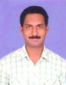

Department of Computer Science & Engineering (DST-FIST Sponsored Department)


Research Group ID : 8 Research Group Name : Software Engineering Group Head : Dr. V. Chandra Prakash
List of the Group Memebrs
| S.No | Name of the Faculty Member | Photo |
| 1 | KODUKULA SUBRAHMANYAM |  |
| 2 | V.CHANDRA PRAKASH | |
| 3 | Y.PRASANTH | |
| 4 | M.SITA RAM PRASAD | |
| 5 | G.SRIDEVI |  |
| 6 | SANKKAYALA SATYANNARAYANA |  |
| 7 | V.RAMA KRISHNA |  |
| 8 | MALLADI SRINIVAS | |
| 9 | G.SIVA NAGESWARA RAO |  |
| 10 | G.KRISHNA MOHAN | |
| 11 | PALACHARLA SVS SRIDHAR |  |
| 12 | BOMMAGANI NAGA JAGADESH | |
| 13 | KONDURI BHAGAVAN | |
| 14 | J.SASI BHANU |  |
| 15 | SABBINENI SRINIVASA RAO | |
| 16 | T.VIJAYA SARADHI |  |
| 17 | B.CHAITANYA KRISHNA |  |
| 18 | PEDDADA VENKATESWARA RAO | |
| 19 | D.NAGA MALLESWARI | |
| 20 | L.LAVANYA |  |
| 21 | SRIDEVI EMANDI | |
| 22 | PREMALATHA VELAGAPALLI | |
| 23 | V R D SWATHI NELLIPUDI |  |
Research Group ID : 9 Research Group Name : Networks, Security & Forensics Group Head : Dr. G. Swain
List of the Group Memebrs
| S.No | Name of the Faculty Member | Photo |
| 1 | GANDHARBA SWAIN |  |
| 2 | RAJASEKHAR KORVI | |
| 3 | S.VENKATESWARLU |  |
| 4 | TARUN NARAYAN SHANKAR |  |
| 5 | KASULA VENKATA DRUGA KIRAN |  |
| 6 | GOPAL MURUGAN |  |
| 7 | CH.RADHIKA RANI | |
| 8 | P.VARAPRASAD |  |
| 9 | K.RUTH RAMYA | |
| 10 | SK.RIAZ | |
| 11 | ADITYA KUMAR SAHU | |
| 12 | GOGINENI KRISHNA CHAITANYA |  |
| 13 | R.LELLA SRIDHAR RAO | |
| 14 | POTTI MURTHY KALYAN CHAKRAVARTHY | |
| 15 | SRINIVASA RAO TAMMIREDDY | |
| 16 | MADHAVARAPU CHANDAN | |
| 17 | K.VENKATA NARAYANA | |
| 18 | SATYABRATA PATRO | |
| 19 | M.JEEVAN BABU |  |
| 20 | KUPPALA DAVID RAJU |  |
| 21 | VEMURI SANDEEP |  |
| 22 | A.ROSHINI | |
| 23 | RAMAIAH CHALLA |  |
| 24 | CHANDRASEKHAR M GOSWAMI |  |
Research Group ID : 10 Research Group Name : Knowledge Engineering Group Head : Dr. M. R. Narasinga Rao
List of the Group Memebrs
| S.No | Name of the Faculty Member | Photo |
| 1 | G.RAMA KRISHNA | |
| 2 | D.RAJESWARA RAO | |
| 3 | M.R.NARSING RAO | |
| 4 | BURRA VIJAY BABU | |
| 5 | M.SREE DEVI |  |
| 6 | G.PRADEEPINI | |
| 7 | C.M.SHEELA RANI | |
| 8 | V.SUCHARITA |  |
| 9 | B.SEKHAR BABU |  |
| 10 | M.V.B.T.SANTHI |  |
| 11 | K.VENKATA RAJU |  |
| 12 | ANUMALASETTY SATYA KALYAN |  |
| 13 | T.SUBHA MASTAN RAO |  |
| 14 | J.SATISH BABU | |
| 15 | L.JAGAJEEVANRAO |  |
| 16 | VIJAY KUMAR VASANTHAM |  |
| 17 | G.V.SATYANNARAYANA PRASAD | |
| 18 | T.SAJANA |  |
| 19 | CHITTA M H SAI BABA | |
| 20 | THALAGONDAPATI VEERAIAH |  |
| 21 | NICHENAMETLA RAJESH |  |
| 22 | JONNALA YAMINI DEVI |  |
| 23 | GADDE SAI SUDHA | |
| 24 | NEMALIKANTI ANAND |  |
| 25 | VURUKONDA NARESH |  |
| 26 | AMBATI RAMI REDDY | |
| 27 | BHUKYA JABBER | |
| 28 | NEMALIKANTI ANAND | |
Research Group ID : 11 Research Group Name : Cloud Computing Group Head : Dr. K.V.V. Satyanarayana
List of the Group Memebrs
| S.No | Name of the Faculty Member | Photo |
| 1 | B.THIRUMALA RAO | |
| 2 | K.THIRUPATHI RAO |  |
| 3 | V.KRISHNA REDDY | |
| 4 | K.V.V.SATYANARRYANA |  |
| 5 | P.SAI KIRAN |  |
| 6 | NULAKA SRINIVASU | |
| 7 | M.VISHNUVARDHAN |  |
| 8 | B.TIRAPATHI REDDY | |
| 9 | T.LAKSHMI SIVA RAMA KRISHNA | |
| 10 | K.RAVINDRANADH |  |
| 11 | VADLAMUDI DIVYA | |
| 12 | A.VIJAY KUMAR |  |
| 13 | TALASILA SASIDHAR |  |
| 14 | P.VIJAYA LAKSHMI |  |
| 15 | TUMMALA SIVA PRIYA |  |
| 16 | M.TRINATH BASU | |
| 17 | KOLACHANA SWETHA |  |
| 18 | KOTA KARTHIK | |
| 19 | SUDARSA DORABABU |  |
| 20 | VURUKONDA NARESH | |
| 21 | G V S NARAYANA | |
| 22 | SORNAPUDI SANDEEP KUMAR |  |
Research Group ID : 12 Research Group Name : Internet of Things Group Head : Dr. S. Satyanarayana
List of the Group Memebrs
| S.No | Name of the Faculty Member | Photo |
| 1 | SANKKAYALA SATYANNARAYANA | |
| 2 | V.SRIKANTH |  |
| 3 | KONDURI BHAGAVAN | |
| 4 | BOMMAGANI NAGA JAGADESH | |
| 5 | M.SITA RAM PRASAD | |
| 6 | V.RAMA KRISHNA | |
| 7 | K.V.DAYA SAGAR | |
| 8 | T.PAVAN KUMAR | |
| 9 | A.V.PRAVEEN KRISHNA | |
| 10 | E.SURESH BABU |  |
| 11 | G.SIVA NAGESWARA RAO | |
| 12 | MALLADI SRINIVAS | |
| 13 | B.SEKHAR BABU | |
| 14 | MANCHALA SRI LAKSHMI | |
| 15 | MOHAN KUMAR CHANDOL | |
| 16 | MYNENI TANOOJ KUMAR | |
| 17 | MAGULURI LAKSHMANA PHANEENDRA |  |